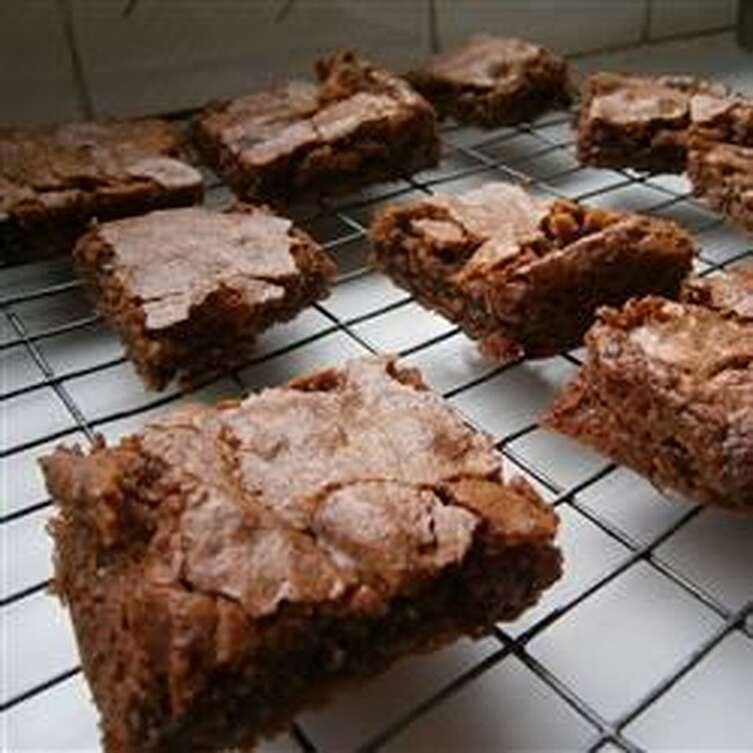

Simple Gluten Free Brownies

Description
Delicious gluten free brownies that are quick and easy to make!
Ingredients
1/4 cup melted dark chocolate
1 1/2 teaspoons unsweetened cocoa powder
1/2 teaspoon gluten free baking powder
1/2 teaspoon vanilla extract
1 cup gluten free chocolate chips
Steps
Preheat oven to 190º celsius.
Line 8-inch square baking dish with parchment paper
Beat sugar and butter together in a large bowl with an electric mixer until light and creamy
Beat in eggs until smooth
Stir in ground almonds, melted chocolate, cocoa powder, baking powder, and vanilla extract
Fold chocolate chips into the batter
Pour batter into the baking dish
Bake in the preheated oven until top is dry and edges have started to pull away from the sides of the pan, 25 to 30 minutes
Cool for 10 minutes on a wire rach before cutting into squares